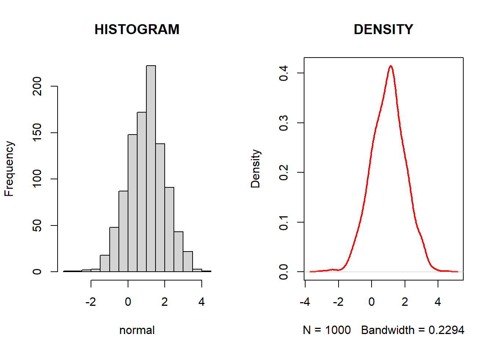
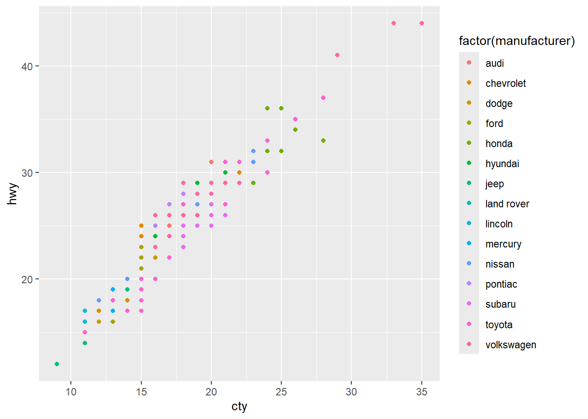
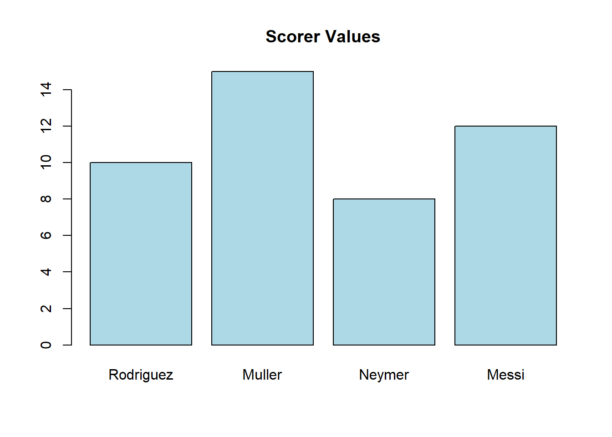

x <- c("YY")
print(x)[1] "YY"YY
August 26, 2024
Among other things, we will look at how to …
R Markdown are dynamic documents in which we can embed R code, for example:
Code Chunk:
Output:
[1] "YY"Note that the echo = FALSE parameter can be added to the code chunk to prevent printing of the R code that generated only the output.
{r, echo=FALSE}
We can also try echo = TRUE parameter (shown above), as well as eval = FALSE/TRUE and include = FALSE/TRUE.
Code:
Output:
This is a normal text
This is a bold text
This is a bold text
Code:
Output:
This is a normal text
This is a italics text
This is a italics text
Code:
Output:
underlined text
Code:
Output:
Here is a link to CU Econ website.
Code:
Output:
Code:
Note: Image will appear if Picture.jpg exists in your working directory.
Code:
Code:
Output:
Code:
Output:
Code:
Output:
| Tables | Are | Cool |
|---|---|---|
| col 1 is | left-aligned | \(2x+1\) |
| col 2 is | centered | 12 |
| col 3 is | right-aligned | Hello |
Code Chunk:

Code Chunk (with ggplot2):

Now for the most important part!
Let’s make a truly dynamic document with citation, footnotes1 and a bibliography!
This is the dynamic document in R developed by @R-core.2
Code Chunk:
# Create a sample data file if it doesn't exist
if(!file.exists("scorer2014.csv")) {
scorer_data <- data.frame(
name = c("Rodriguez", "Muller", "Neymer", "Messi"),
value = c(10, 15, 8, 12)
)
write.csv(scorer_data, "scorer2014.csv", row.names = FALSE)
}
scorer <- read.csv("scorer2014.csv", header = TRUE)
barplot(scorer$value, names.arg = scorer$name,
main = "Scorer Values", col = "lightblue")
What makes the document dynamic is that the output above will change as input file (data) changes.
To see this, let’s generate 5 random numbers and get their sum. And see how this changes as a text!
Code Chunk:
[1] 9 1 10 2 10Try
The sum of your 5 random numbers is 'r sum(random.int)'.For example, in this case, we get the following output:
The sum of your 5 random numbers is 32.
Run this several times and you will get different sums as you pick different numbers! AMAZING!
Adding a footnote is easy using hat ^ with contents inside square brackets like this.^[This is a footnote]
Referencing and citations are a little tricky.
You need two things:
Create s separate file which contains all your references in BibTex form, call it, say references.bib and place it in the same folder as your document file.
In the yaml at the top of your document file include the line bibliography: references.bib. This links your document with the references.bib file.
Here is an exampe of a BibTex which you can include in your references.bib
@article{YoonMudida2020,
author = {Yoon, Yong and Mudida, Robert},
title = {Social and Economic Transformation in Tanzania and South Korea: Ujamaa and Saemaul Undong in the 1970s Compared},
journal = {Seoul Journal of Economics},
volume = {33},
number = {2},
pages = {195--231},
year = {2020},
publisher = {Institute of Economic Research, Seoul National University},
issn = {1225-0279},
url = {https://hdl.handle.net/10371/168254}
}And to cite this, just place @YoonMudida2020 in the text.
As an added bonus, the full reference will appear at the end of the document!